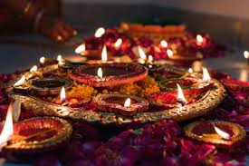

A White color magnificent building ,perched at a height of about 20 feet ,is known as Vishnu Temple of Gorakhpur, which is about 800 yr old temple and heritage monument of India.
Dedicated to Lord Vishnu ,who , according to Hindu mythology is The protector God of the world. It is located just near the Asuran Chauk , at the Medical College road ,about 3 Kms from Railway station.
Many Auto rikshaws, Rikshaw and buses ply on this route. To reach the temple you have to ascend up through steps to reach the temple. Just in front of the main temple, I saw a banana tree where devotees were offering prayer ,since this plant is symbolic of Lord Vishnu..
After entering inside temple you’ll see a beautiful black color idol of Lord Vishnu in the main sanctum .There are two other small sanctums, one on Left side devoted to Badrinath shrine.Another on Right side devoted to Jagannathpuri . Sanctum of deities of Ramehswaram and Dwarika are just after the entrance on either corners. Thus You can get Darshan of all the Dham of Hindu tirthas at one place , besides the Darshan of Lord Vishnu. It is supposed to be the most pious temple of the Gorakhpur city. There is rectangular Parikrama-path around this temple. Look on the left side and there is open discourse theatre. On right hand side is many Vedis where Yagna are performed. Temple is decorated mainly at Dussehara time.